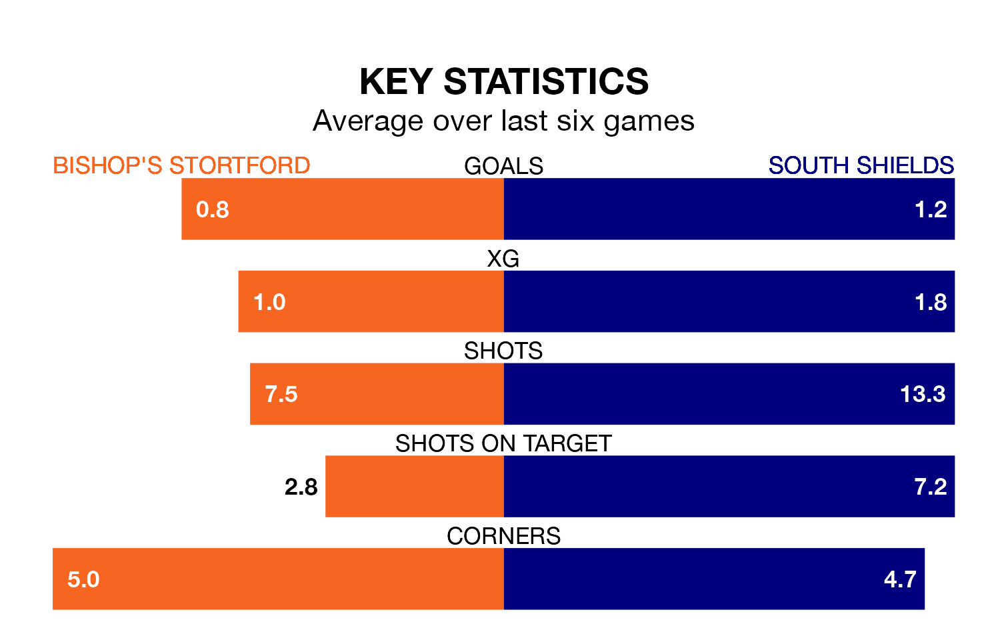

Bishop's Stortford host South Shields in Tuesday's late match at the Research and Development Advisors UK Stadium looking to bounce back from defeat last time out in National League North and South.
Bishop's Stortford, who sit zero in the league after 26 games, fell to a 2-0 home defeat to Peterborough Sports on December 26.
They face a South Shields side who also lost their last match, a 3-1 defeat to Blyth Spartans, and who sit 21st in the table.
In Paul Blackett, South Shields have the league's most on-form striker so far this season. He has notched 15 goals in 25 appearances.
His goal rate of one every 138 minutes is much quicker than that of Tosin Olufemi, Bishop's Stortford's top scorer with a goal every 429 minutes, and a total of four goals in 20 games.
With 24 goals in 26 games so far this season, the hosts are the league's-20th-lowest scorers with 0.9 goals per game. And they are conceding more than average, letting in 55 goals at a rate of 2.1 per game.
The away team, meanwhile, are above average scorers, with 1.5 goals per game, compared to a league average of 1.4. They have conceded 1.2 goals per game.
Bishop's Stortford are in bad form in National League North and South, with one win and a draw from their last six games.
And also with a win and a draw over that period, South Shields's form is identical – they have both taken four points from 18.
Updated: 11:31, 09/01/24